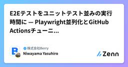

株式会社Berryのフィード
https://zenn.dev/p/berry_blog
Berryは医療機器の製造販売を行う企業です。わたしたちは、住む場所や環境によらず、あらゆる人に最適な治療が提供されるべきだと信じています。3Dプリント技術と３Dデータ解析技術を組み合わせてこれまでの医療を大きく進化させ、目指す世界を実現します。
フィード

E2Eテストをユニットテスト並みの実行時間に — Playwright並列化とGitHub Actionsチューニングの実践 172
172
株式会社Berryのフィード
私たちのチームでは、品質管理システム（QMS）SaaS「QMSmart」の開発で、約 100 spec / 140 テストケースの E2E テストを、PR ごとに CI で自動実行し、wall-clock 6〜8 分で完走させる運用が回っています。これはユニットテスト（Vitest）の CI とほぼ同じ所要時間です。本記事では、これを実現するために行った並列実行を前提にした E2E テストの構造設計Playwright workers による並列化GitHub Actions Runner の設定とチューニング（Kong 502 の根治まで）flaky テストを作らないため...
7日前

Claude Code Skillsで開発ワークフローを効率化している話
株式会社Berryのフィード
はじめにこんにちは、株式会社Berryの浅沼です。以前、Clineを利用した開発が超快適なので、使っている.clinerulesを解説しますという記事で、AI駆動開発における .clinerules の育て方を紹介しました。あれから私たちのAI開発環境も日々進歩を続けています。Clineから Claude Code に移行し、ルールファイルの管理から Skillsによる開発ワークフロー各フェーズの効率化 へと進んでいます。本記事では、医療機器向け品質管理システム「QMSmart」の開発で実際に運用している 12種類のClaude Code Skills と、その設計思想・ディ...
4ヶ月前
Claude Code GitHub Actionsで実現！重要な仕様を見逃さないレビュー自動化とチーム開発の革新
株式会社Berryのフィード
Claude Code GitHub Actionsによる監査ログ実装チェックの自動化こんにちは、株式会社Berryの浅沼です。今回は、品質管理システム（QMS）の開発で導入したClaude Code GitHub Actionsによる監査ログ実装チェックの自動化について、実装の詳細と運用効果をご紹介します。eQMSでは監査ログが必須要件となることが多いですが、手動でのレビューだけでは実装漏れのリスクが常に付きまといます。この課題をAIの力で解決した取り組みについて、具体的な実装から運用まで詳しく解説していきます。 1. はじめに - なぜ監査ログの自動チェックが必要だった...
8ヶ月前
GATTを理解して、自作Bluetooth機器と通信してみよう
株式会社Berryのフィード
こんにちは、株式会社Berryの庭山です！Berryでは、Vue/TypeScript/Supabaseアプリケーションの開発とFactory Automationを担当しております。Bluetooth Low Energy（BLE）は、ウェアラブルデバイスやスマートホーム機器に広く利用されている[1]無線通信規格ですが、BtoB製品やオートメーションに採用する観点でも多くのメリットを持っています。モバイル端末と通信が容易：ウェアラブルデバイス・スマートホーム機器産業用機器との互換性：RS-232C等[2]のシリアル通信を無線化できる世界共通規格[3]：市場を問わない本記...
9ヶ月前
テクノロジーで医療格差を０を目指す、Berryが開発しているプロダクトと開発環境をご紹介！
株式会社Berryのフィード
今回はBerry開発しているプロダクトと開発環境や使っている技術等をご紹介いたします！Berryは、「テクノロジーで医療格差を０にする」ことを掲げる5年目となるベンチャーです。Berryでは大きく２つの事業を行っています！・赤ちゃん向けの頭蓋形状矯正ヘルメットの開発・製造・販売・医療機器メーカー向けクラウド型eQMS「QMSmart」それぞれの事業で開発しているプロダクトや使用している技術についてご紹介します。 赤ちゃん向けの頭蓋形状矯正ヘルメット１つ目は、赤ちゃん向けの頭蓋形状矯正ヘルメットを開発・製造・販売する事業です。頭の形が大きく変形している赤ちゃんに対して、ヘ...
9ヶ月前
画像からWebフォームを自動生成！AIとVueForm Builderで実現する爆速フォーム作成
株式会社Berryのフィード
はじめに紙の申込書やアンケートをWebフォーム化する作業、面倒ですよね。。「この紙のフォーム、Webフォームにしてください」こんな依頼を受けるたびに、一つ一つ項目を見ながら手動でフォームを作成していませんか？項目が多いフォームだと、30分以上かかることもザラです。そんな悩みを解決するため、画像をアップロードするだけでWebフォームが自動生成される仕組みを作ってみました。AIとVueForm Builderを組み合わせたら、想像以上に実用的なものができたので共有します！ Vueform Builderとは今回の実装の要となるVueform Builderについて、まず簡単...
1年前
Piniaを導入して1年：Vueアプリケーションの状態管理をどうスケールさせたか
株式会社Berryのフィード
私たちが社内のBerry管理に Pinia を導入してから、ほぼ1年が経ちました。この期間に、コードの構成、保守性、再利用性が明確に向上したことを実感しています。本記事では、すべてのロジックを .vue ファイルに詰め込んでいた頃から、Pinia、composables、view helpers を活用してロジックをモジュール化するまでの過程を共有します。 Berry管理とは？Berry管理 は、当社の業務プロセスを支援・効率化するために開発された社内向けのWebアプリケーションです。このシステムは、複数の部門で活用されており、業務に必要な情報の共有や進捗の把握、データの一元管...
1年前
具体例から見るMCP ～Blender MCPからMCPの雰囲気をつかむ～
株式会社Berryのフィード
こんにちは、株式会社Berryの古荘です！私は今年2月に入社し、以降ヘルメット作成を効率化するための3DCGのツール開発などを行っています。さて、先日Berryでは様々なAIを触るもくもく会が開催されたのですが、私は以下の理由からBlender MCPを触ってみました。最近話題のMCP(Model Context Protocol)が何なのかよくわかっていなかったBlender × AI で何ができるのか気になった本記事は、上記の会やその後のコードリーディングで得られた知見をまとめたものです。MCPの具体例であるBlender MCPを使うところから始め、MCPの一側面を見...
1年前
Persistentブランチを利用する場合のSupabase Branching 設定と運用自動化
株式会社Berryのフィード
こんにちは、株式会社Berryの浅沼です。Supabaseの機能の中で、最近はBranchingが格段に便利だと感じています。SupabaseのBranchingはGitHubと連携することで、プルリクエストのGitブランチに合わせてSupabaseのプロジェクトも手軽にブランチングされる機能です。他の開発に影響を与えずに変更を反映したDBができるため、動作確認の環境用意が格段に捗ります。Supabase Branchingの公式ドキュメントはこちらになります。https://supabase.com/docs/guides/deployment/branchingこのSupab...
1年前
Supabase Edge Functions 実践ガイド：認証から本番デプロイまで
株式会社Berryのフィード
初めまして！去年の年末に入社しました、株式会社Berryの中川です。私はヘルメット治療管理システムの開発・運用に携わっており、「あらゆる人が必要な時に必要な医療を受けられる社会を実現する」ことを目指して日々邁進しております。以前公開したブログの中で、Supabaseを利用してアプリをローンチする際の注意点や、VitestでRLSをテストするために行っている方法についてご紹介しました。https://zenn.dev/berry_blog/articles/cfce64da076878https://zenn.dev/berry_blog/articles/03beda8c6681...
1年前
Clineを利用した開発が超快適なので、使っている.clinerulesを解説します
株式会社Berryのフィード
こんにちは、株式会社Berryの浅沼です。この記事を書いている数週間前くらいから話題のClineを会社で導入し、開発に利用しています。最初はコードの自動生成から試していたのですが、.clinerulesを使ってプロジェクトごとのカスタム設定ができることを知り、どんどん活用の幅を広げていきました。特に大きかったのが、プロジェクト内のコード構造・コーディングルールの設定に加えて、コミットメッセージやプルリクエストのタイトル・サマリーを生成するルールを追加したことです。これによって、「コードを書く→コミットメッセージを考える→プルリクを書く」という一連の作業がスムーズになり、全体の開発効率...
1年前
オフィス探検アプリを作る～簡単な物体認識のはじめ方～
株式会社Berryのフィード
はじめにこんにちは、Berryへ新卒入社し、2年目のKyoです。主にモバイルアプリ関連の開発に携わっております。最近、Berryのオフィスでは外国籍の社員が増え、職場の雰囲気がますます国際的になってきました。異なるバックグラウンドを持つメンバーが増えたことで、新たな視点やアイデアが日々生まれており、非常に刺激的な環境が広がっています。その一方で、オフィス内には「これは何だろう？」と気になるアイテムがいくつか見受けられます。例えば、机の上に置かれたユニークな形の置物や、共有スペースに置かれた見慣れないツールなど。これらが装飾的なアイテムなのか、それとも特定の用途を持つものなのか、興...
2年前
AWS Lambdaにblenderを載せてサーバーレスなレンダリングサーバーを作る
株式会社Berryのフィード
初めまして、株式会社Berryの齋藤です。みなさまLambdaはやっておりますでしょうか。Berryでも3Dデータの自動処理を行う上で数多くのLambda関数を作成、運用しています。その中で3Dデータのプレビュー生成が必要になったため、blenderによるプレビュー生成を行うことにしました。通常であればEC2を使い、レンダリングサーバーを立てることが一般的かと思いますが、費用面・運用面を考慮し、Lambdaによるサーバーレスなレンダリングサーバーを作成することにしました。非常にニッチなユースケースですが、ざっと検索したところ日本語の情報が少なかったので、今回はblenderをL...
2年前
Supabase ミートアップ in 東京にLT枠で参加しました
株式会社Berryのフィード
こんにちは、株式会社Berryの浅沼です。今回は、8月22日に行われたSupabaseのミートアップイベントに、LT枠で参加してきましたので、LTした内容を紹介したいと思います。https://supabase.connpass.com/event/326347/ Supabase ミートアップ in 東京Supabaseのコミュニティミートアップであり、今回は、Supabaseローンチウィーク１２の開催を記念しての開催になりました。Supabaseローンチウィークでは、様々な新機能などが次々と公開・紹介されていきます。今回も、In-browser Postgresとなるpos...
2年前
VitestをつかってSupabaseのRow Level Security（RLS）のPolicyをテストする
株式会社Berryのフィード
こんにちは、株式会社Berryの浅沼です。先日公開したブログ、『Supabaseでアプリをリリースする前に確認すること』の中で、RLSの有効化について触れさせていただきました。Berryでは、RLSに設定したPolicyを検証するテストをVitestでコード化することも進めています。今回は、VitestでRLSをテストするために行っている自分たちの方法を紹介したいと思います。https://zenn.dev/berry_blog/articles/cfce64da076878#rlsが有効になっていることを確認 背景とモチベーション昨年、すでに動いているサービスのRLSを見直し...
2年前
Supabaseでアプリをリリースする前に確認すること
株式会社Berryのフィード
株式会社Berryの名越です！我々、Berryは赤ちゃん向けの頭蓋形状矯正ヘルメットを提供する医療機器メーカーです。Berryでは、ヘルメット治療を効率的に実現させるため、医療機関と３Dデータのやり取りをしながらヘルメット治療に関する情報管理を行うWebシステム（Vue, vercel）患者さんが日々の装着時間記録や医療機関での治療情報を確認できるアプリ（flutter）などのサービスも提供しております。先日公開したブログの中で、医療機関向けのアプリのバックエンドはSupabaseを利用していることをお伝えしましたが、弊社で提供しているアプリもバックエンド（認証・データ...
2年前
Berryを支えるアーキテクチャを紹介します
株式会社Berryのフィード
こんにちは、株式会社Berryの浅沼です！今回は、開発しているサービスの中からヘルメット治療管理システムのアーキテクチャについて紹介します。医療機関と３Dデータのやり取りをしながらヘルメット治療に関する管理を実現しているWebシステム、そのアーキテクチャの特徴、今後の展望について触れたいと思います。 システム概要ヘルメット治療管理システムは、主に以下の3つの機能を持っています。日々、医療機関の方の使いやすさ、見やすさを考えながら開発しています。特に、3Dヘルメットデータを確認するUIなどは、別途、機会があれば技術面を紹介してみたい内容です。3D頭部データの受信3Dヘルメット...
2年前
Berryテックブログはじめます。
株式会社Berryのフィード
こんにちは、株式会社Berry CEOの中野です！今月からテックブログを始めることにしたので、まずは先陣を切って、Berryの会社紹介やサービスなどについて書いていきたいと思います。 Berryについて赤ちゃんの頭の形のゆがみを治療する頭蓋形状矯正ヘルメットの製造販売をしている医療機器ベンチャーです。創業3年、40名程のメンバーでやっています。「ヘルメット治療」を聞いたことがないという人も多いと思うのですが、頭のゆがみが一定以上の場合に適用となる、小児向けの医療機器になります。特徴的な点として、3Dスキャンした赤ちゃんの頭部データをもとに、ヘルメットの３Dデー...
2年前